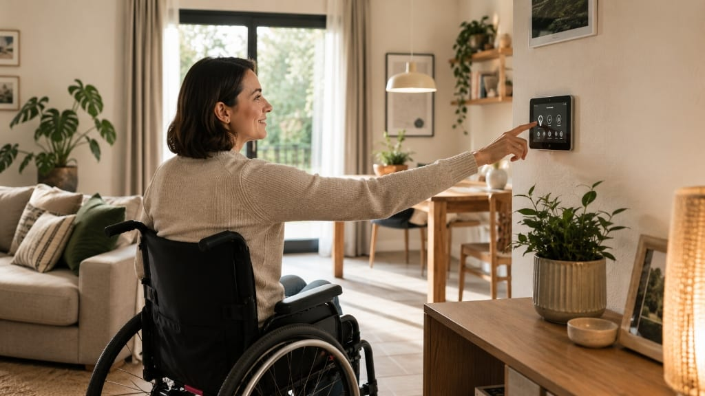
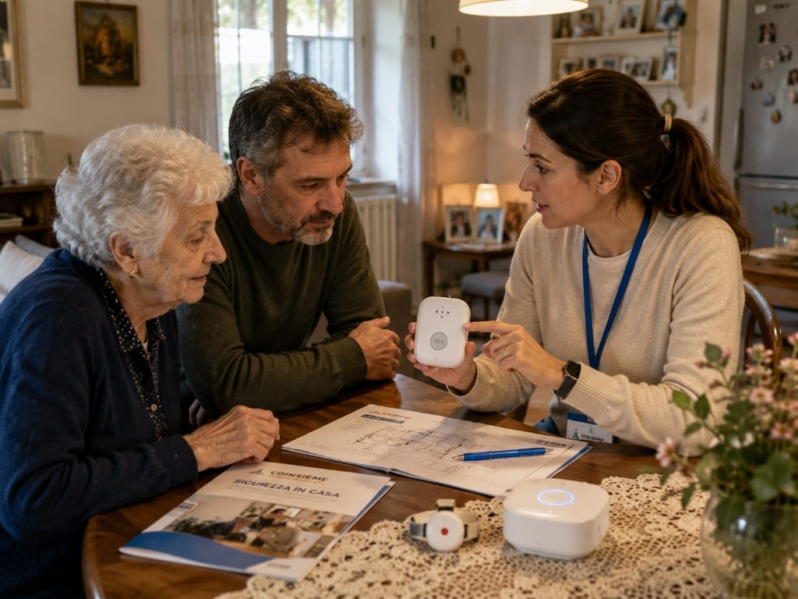
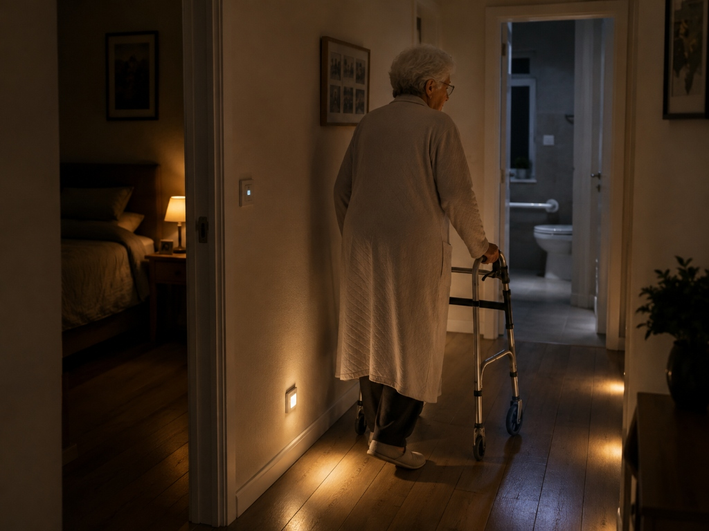

Desideri e abitudini di vita
Ciò che la persona ama fare, i ritmi della giornata, il valore emotivo attribuito ai propri spazi e alla propria privacy.
DOMOTICA ASSISTIVA E ABITARE AUTONOMO · FONDAZIONE COINSIEME ETS
Quando alcuni gesti in casa diventano più faticosi, anche l’ambiente può avere bisogno di cambiare. La domotica assistiva parte da ciò che è cambiato nella vita della persona e aiuta a valutare piccoli adattamenti, strumenti discreti e relazioni di supporto.

IL NOSTRO PUNTO DI PARTENZA
Troppo spesso la domotica viene presentata come un catalogo di apparati o una sequenza di comandi da installare. Per COINSIEME il punto di partenza è profondamente diverso: non esistono soluzioni universali precostituite, perché ogni persona e ogni nucleo familiare vivono una storia unica. Progettare un ambiente accessibile significa comprendere a fondo quattro fattori essenziali:

Ciò che la persona ama fare, i ritmi della giornata, il valore emotivo attribuito ai propri spazi e alla propria privacy.
Le autonomie da valorizzare, le barriere fisiche o sensoriali incontrate e i punti critici in cui è necessario un supporto.
La presenza di caregiver, familiari o operatori, comprendendo come facilitare l'assistenza senza ridurre l'indipendenza della persona.
La disposizione degli ambienti, gli impianti esistenti e i vincoli strutturali, per intervenire con gradualità e sostenibilità.
LE RISPOSTE AI BISOGNI QUOTIDIANI
Non partiamo dai prodotti, ma dalle azioni che compongono la vita di tutti i giorni. L'approccio che COINSIEME promuove raggruppa le possibilità tecnologiche intorno agli obiettivi reali della persona:
Poter aprire e chiudere tapparelle o porte, regolare l'illuminazione, impostare la temperatura o gestire gli elettrodomestici in modo autonomo, anche in presenza di ridotta mobilità o difficoltà di presa manuale (attraverso comandi vocali, sensori o interfacce facilitate).
Prevenire incidenti domestici e gestire le emergenze senza ansia: sensori discreti per fughe di gas, allagamenti, fumo o cadute accidentali, illuminazione notturna automatica dei percorsi e sistemi di richiesta di aiuto rapidi e intuitivi.
Superare l'isolamento e mantenere il contatto costante con familiari, amici e servizi territoriali grazie a interfacce vocali, videochiamate semplificate e dispositivi accessibili anche a chi ha difficoltà sensoriali o cognitive.
Agevolare le routine personali, dalla gestione dei promemoria orari per l'assunzione di farmaci al coordinamento delle attività domestiche, rispettando sempre i tempi e i desideri della persona.
Offrire ai caregiver e ai familiari la tranquillità di un supporto continuo attraverso notifiche discrete su eventi anomali, eliminando l'effetto di sorveglianza invasiva e preservando la dignità e la privacy di chi vive in casa.
IL PRINCIPIO DELLA SOLUZIONE INTEGRATA
L'innovazione tecnologica ha un valore immenso, ma da sola non può risolvere ogni complessità dell'abitare. La vera qualità di un intervento nasce dalla capacità di integrare con equilibrio diverse forme di supporto, valorizzando prima di tutto la persona e le relazioni umane. Una buona risposta ai bisogni dell'abitare combina diversi livelli complementari:
Il potenziale di autonomia, le scelte e i desideri della persona.
La presenza insostituibile di familiari, caregiver e operatori.
Accorgimenti ergonomici, maniglie, arredi adeguati e strumenti per la mobilità.
Riorganizzazione degli spazi, eliminazione di ostacoli e percorsi fruibili.
Sensori, comandi vocali e controllo intelligente degli impianti.
Interfacce di supporto alla comunicazione e monitoraggio discreto.
“La soluzione migliore non è quella con più tecnologia, ma quella che risponde meglio alla vita della persona.”
Spesso piccoli adattamenti ambientali uniti a tecnologie semplici producono risultati migliori e più duraturi rispetto a impianti complessi e difficili da gestire.APPROCCIO METODOLOGICO E LINEE DI LAVORO
La Fondazione COINSIEME ETS non commercializza prodotti né opera come installatore impiantistico. Mette invece a disposizione le proprie competenze per affiancare persone, famiglie, servizi sociosanitari ed enti del Terzo Settore nell'analisi dei bisogni, nella progettazione personalizzata e nello sviluppo di soluzioni per l'autonomia, lungo un percorso in quattro fasi:
Accoglienza della richiesta, dialogo preliminare con la persona e i familiari per mettere a fuoco le esigenze primarie, le aspettative e il contesto complessivo.
Analisi congiunta delle abitudini di vita, delle difficoltà pratiche riscontrate a domicilio e delle caratteristiche fisiche e impiantistiche dell'abitazione.
Elaborazione di un'ipotesi di adattamento integrato su misura, che unisce ausili, riorganizzazione degli spazi e soluzioni domotiche opportune, definita insieme a chi vivrà gli ambienti.
Supporto all'apprendimento delle funzioni, verifica della reale efficacia dell'intervento nella vita quotidiana e adattamento progressivo al mutare dei bisogni nel tempo.
PROGETTUALITÀ E PARTENARIATI SUL CAMPO
Le competenze di COINSIEME nella domotica assistiva trovano applicazione nella partecipazione a progetti territoriali dedicati all'autonomia e all'inclusione delle persone con disabilità. Un esempio concreto è la partecipazione come partner al progetto presentato nella primavera del 2026 nell'ambito del programma Vita & Opportunità, con la Fondazione Make4Work ETS in qualità di ente capofila.
Abitare accessibile, domotica e adattamento degli ambienti di vita (Area Fondazione COINSIEME ETS).
Inclusione lavorativa, formazione pratica e sviluppo delle competenze (Area Fondazione Make4Work ETS capofila).
Partecipazione comunitaria, vita di relazione e contrasto all'isolamento sociale.
SCENARI DI VITA QUOTIDIANA
Ogni situazione richiede una valutazione specifica. Alcuni contesti mostrano però con particolare chiarezza come una soluzione domotica ben integrata possa sostenere autonomia, sicurezza e qualità della vita:
Una persona con limitazioni motorie agli arti superiori che desidera poter accendere la luce, aprire la porta di casa o regolare la temperatura autonomamente, senza dover dipendere continuamente dall'aiuto altrui per ogni piccolo gesto.
Una persona anziana che vive sola e vuole mantenere la propria indipendenza in sicurezza, con luci notturne automatiche per prevenire le cadute, promemoria vocali per i farmaci e sensori che allertano i figli solo in caso di reale anomalia prolungata.
Caregiver e familiari che assistono un congiunto fragile e necessitano di essere avvisati tempestivamente se si verifica una situazione critica (come una fuga di gas o una porta lasciata aperta di notte), senza ricorrere a telecamere invasive o a una sorveglianza opprimente.
Gruppi appartamento e soluzioni di residenzialità inclusiva in cui la tecnologia favorisce l'autonomia dei singoli residenti e supporta il lavoro educativo degli operatori nella gestione quotidiana della casa comune.

FORMAZIONE E NUOVE PROFESSIONALITÀ
Installare dispositivi tecnologici non basta: occorre saper ascoltare la persona, dialogare con i caregiver, comprendere il quadro normativo e collaborare con i servizi sociosanitari e i tecnici impiantisti. Per questo la Fondazione COINSIEME ETS sta sviluppando la proposta di un percorso formativo specialistico dedicato alla figura del Manager di Domotica Assistiva, una figura ponte interdisciplinare tra cura, tecnologie e welfare dell'abitare.
Proposta formativa di livello post-laurea/specialistico ideata per qualificare figure capaci di coordinare bisogni socio-sanitari e soluzioni per l'abitare accessibile.
DIALOGO E COLLABORAZIONI
Che tu sia una persona con disabilità, un familiare, un operatore sociale, un ente pubblico o un'organizzazione del Terzo Settore interessata a sviluppare partenariati o sperimentare modelli di abitare inclusivo, la Fondazione COINSIEME ETS mette a disposizione le proprie competenze. Contattaci per raccontarci la tua situazione o proporre una collaborazione progettuale.
Contatta la Fondazione per un confronto